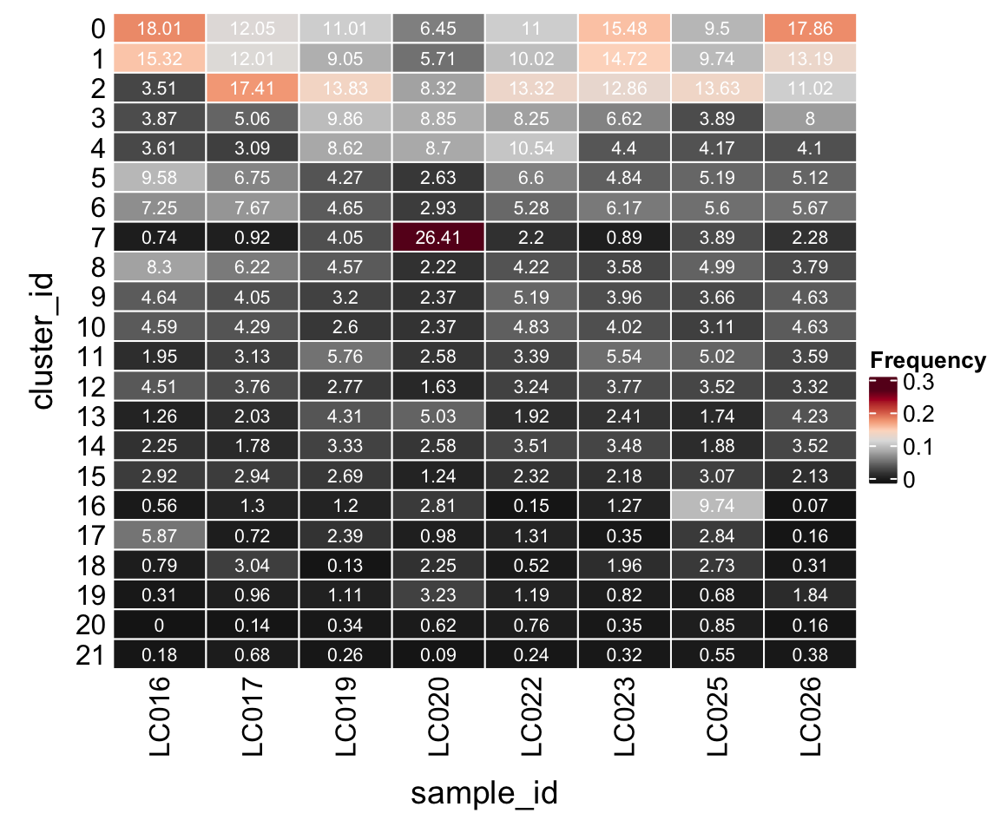
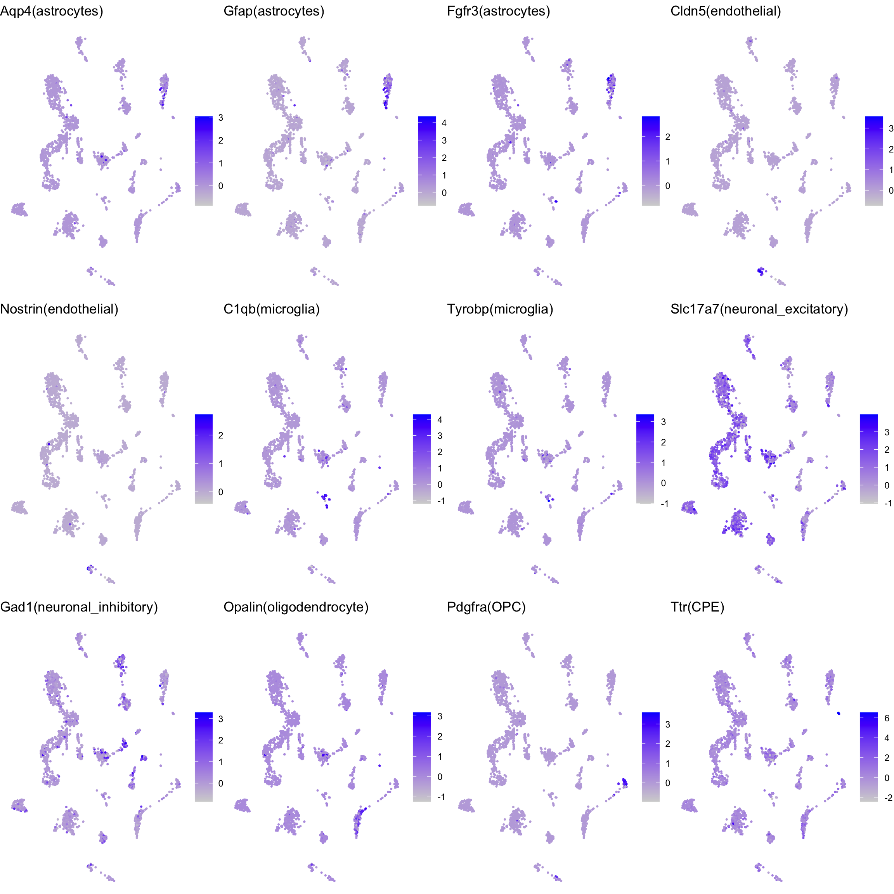

Cluster annotation
Pierre-Luc Germain
Institute for Molecular Life Sciences, University of Zurich, SwitzerlandHelena L. Crowell
Institute for Molecular Life Sciences, University of Zurich, SwitzerlandMarch 31, 2020
Last updated: 2020-03-31
Checks: 5 2
Knit directory: LPS/
This reproducible R Markdown analysis was created with workflowr (version 1.6.1). The Checks tab describes the reproducibility checks that were applied when the results were created. The Past versions tab lists the development history.
The R Markdown file has unstaged changes. To know which version of the R Markdown file created these results, you’ll want to first commit it to the Git repo. If you’re still working on the analysis, you can ignore this warning. When you’re finished, you can run wflow_publish to commit the R Markdown file and build the HTML.
Great job! The global environment was empty. Objects defined in the global environment can affect the analysis in your R Markdown file in unknown ways. For reproduciblity it’s best to always run the code in an empty environment.
The command set.seed(20190311) was run prior to running the code in the R Markdown file. Setting a seed ensures that any results that rely on randomness, e.g. subsampling or permutations, are reproducible.
Great job! Recording the operating system, R version, and package versions is critical for reproducibility.
- cluster-anno
- dim-red
- dim-red-expr
- known-markers
- known-markers-heatmap
- load-data
- load-libs
- save-data
- scran-findMarkers
- scran-markers-heatmap
- unnamed-chunk-2
- unnamed-chunk-3
- unnamed-chunk-4
To ensure reproducibility of the results, delete the cache directory 2-annotation_cache and re-run the analysis. To have workflowr automatically delete the cache directory prior to building the file, set delete_cache = TRUE when running wflow_build() or wflow_publish().
Great job! Using relative paths to the files within your workflowr project makes it easier to run your code on other machines.
Great! You are using Git for version control. Tracking code development and connecting the code version to the results is critical for reproducibility.
The results in this page were generated with repository version bebad71. See the Past versions tab to see a history of the changes made to the R Markdown and HTML files.
Note that you need to be careful to ensure that all relevant files for the analysis have been committed to Git prior to generating the results (you can use wflow_publish or wflow_git_commit). workflowr only checks the R Markdown file, but you know if there are other scripts or data files that it depends on. Below is the status of the Git repository when the results were generated:
Ignored files:
Ignored: .DS_Store
Ignored: .snakemake/
Ignored: LPS/.DS_Store
Ignored: LPS/analysis/.DS_Store
Ignored: LPS/analysis/0-preprocessing_cache/
Ignored: LPS/analysis/1-clustering_cache/
Ignored: LPS/analysis/2-annotation_cache/
Ignored: LPS/analysis/3-differential_cache/
Ignored: LPS/analysis/4-visualization_cache/
Ignored: LPS/analysis/5-geneset_cache/
Ignored: LPS/code/.DS_Store
Ignored: LPS/data/
Ignored: LPS/figures/
Ignored: LPS/output/.DS_Store
Ignored: LPS/output/DS_results_AD-gid.logcounts.rds
Ignored: LPS/output/DS_results_AD-gid.vstresiduals.rds
Ignored: LPS/output/DS_results_AD-sid.logcounts.rds
Ignored: LPS/output/DS_results_AD-sid.vstresiduals.rds
Ignored: LPS/output/DS_results_MAST.logcounts.rds
Ignored: LPS/output/DS_results_MM-dream.rds
Ignored: LPS/output/DS_results_MM-dream2.rds
Ignored: LPS/output/DS_results_MM-nbinom.rds
Ignored: LPS/output/DS_results_MM-vst.rds
Ignored: LPS/output/DS_results_edgeR.sum.counts.rds
Ignored: LPS/output/DS_results_edgeR.sum.scalecpm.rds
Ignored: LPS/output/DS_results_limma-trend.mean.logcounts.rds
Ignored: LPS/output/DS_results_limma-trend.mean.vstresiduals.rds
Ignored: LPS/output/DS_results_limma-voom.sum.counts.rds
Ignored: LPS/output/DS_results_pb.csv
Ignored: LPS/output/DS_results_scDD.logcounts.rds
Ignored: LPS/output/DS_results_scDD.vstresiduals.rds
Ignored: LPS/output/GSEA_data.rds
Ignored: LPS/output/GSEA_df.rds
Ignored: LPS/output/GSEA_results.csv
Ignored: LPS/output/SCE_annotation.rds
Ignored: LPS/output/SCE_preprocessing.rds
Ignored: LPS/output/SO_clustering.rds
Ignored: LPS/output/logFCs_by_cluster-sample.rds
Ignored: LPS/output/topGO_ccid3.csv
Ignored: data/
Ignored: figures/.DS_Store
Ignored: figures/kang-perf_by_cat.pdf
Ignored: figures/kang-perf_combined.pdf
Ignored: figures/magl-perf_by_cat.pdf
Ignored: figures/null.pdf
Ignored: figures/pb_mean_disp.pdf
Ignored: figures/perf_by_es.pdf
Ignored: figures/perf_by_gs.pdf
Ignored: figures/perf_by_ss.pdf
Ignored: figures/sim_pars.pdf
Ignored: figures/sim_vs_est_lfc.pdf
Ignored: figures/summary_heatmap.pdf
Ignored: meta/
Ignored: plots/
Ignored: results/
Ignored: scripts/.DS_Store
Ignored: scripts/.drake/config/
Ignored: scripts/.drake/data/
Ignored: scripts/.drake/drake/
Ignored: scripts/.drake/keys/
Ignored: scripts/.drake/scratch/
Untracked files:
Untracked: LPS/workflowr.Rproj
Untracked: README.html
Untracked: figures/figures/
Untracked: logs/
Untracked: session_info.txt
Untracked: setup.Rout
Unstaged changes:
Modified: .Renviron
Modified: LPS/.gitignore
Modified: LPS/analysis/0-preprocessing.Rmd
Modified: LPS/analysis/1-clustering.Rmd
Modified: LPS/analysis/2-annotation.Rmd
Modified: LPS/analysis/3-differential.Rmd
Modified: LPS/analysis/4-visualization.Rmd
Modified: LPS/analysis/5-geneset.Rmd
Deleted: LPS/analysis/6-more.Rmd
Modified: LPS/analysis/_site.yml
Modified: LPS/analysis/index.Rmd
Modified: LPS/code/utils.R
Modified: README.md
Modified: Snakefile
Modified: figures/fig_sim_pars.R
Modified: figures/fig_summary.R
Note that any generated files, e.g. HTML, png, CSS, etc., are not included in this status report because it is ok for generated content to have uncommitted changes.
These are the previous versions of the repository in which changes were made to the R Markdown (LPS/analysis/2-annotation.Rmd) and HTML (LPS/docs/2-annotation.html) files. If you’ve configured a remote Git repository (see ?wflow_git_remote), click on the hyperlinks in the table below to view the files as they were in that past version.
| File | Version | Author | Date | Message |
|---|---|---|---|---|
| html | a38f6f0 | HelenaLC | 2019-08-13 | bioc3.10 rerun |
| Rmd | 7189a88 | HelenaLC | 2019-08-13 | bioc3.10 rerun |
| html | 7189a88 | HelenaLC | 2019-08-13 | bioc3.10 rerun |
Load packages
library(ComplexHeatmap)
library(cowplot)
library(ggplot2)
library(dplyr)
library(muscat)
library(purrr)
library(RColorBrewer)
library(viridis)
library(scran)
library(Seurat)
library(SingleCellExperiment)Load data & convert to SCE
so <- readRDS(file.path("output", "SO_clustering.rds"))
sce <- as.SingleCellExperiment(so, assay = "RNA")
colData(sce) <- as.data.frame(colData(sce)) %>%
mutate_if(is.character, as.factor) %>%
DataFrame(row.names = colnames(sce))Nb. of clusters by resolution
cluster_cols <- grep("res.[0-9]", colnames(colData(sce)), value = TRUE)
sapply(colData(sce)[cluster_cols], nlevels)integrated_snn_res.0.1 integrated_snn_res.0.2 integrated_snn_res.0.4
18 22 28
integrated_snn_res.0.8 integrated_snn_res.1 integrated_snn_res.1.2
35 39 40
integrated_snn_res.2
47 Cluster-sample counts
# set cluster IDs to resolution 0.2 clustering
so <- SetIdent(so, value = "integrated_snn_res.0.2")
so@meta.data$cluster_id <- Idents(so)
sce$cluster_id <- Idents(so)
(n_cells <- table(sce$cluster_id, sce$sample_id))
LC016 LC017 LC019 LC020 LC022 LC023 LC025 LC026
0 703 250 258 218 360 489 278 806
1 598 249 212 193 328 465 285 595
2 137 361 324 281 436 406 399 497
3 151 105 231 299 270 209 114 361
4 141 64 202 294 345 139 122 185
5 374 140 100 89 216 153 152 231
6 283 159 109 99 173 195 164 256
7 29 19 95 892 72 28 114 103
8 324 129 107 75 138 113 146 171
9 181 84 75 80 170 125 107 209
10 179 89 61 80 158 127 91 209
11 76 65 135 87 111 175 147 162
12 176 78 65 55 106 119 103 150
13 49 42 101 170 63 76 51 191
14 88 37 78 87 115 110 55 159
15 114 61 63 42 76 69 90 96
16 22 27 28 95 5 40 285 3
17 229 15 56 33 43 11 83 7
18 31 63 3 76 17 62 80 14
19 12 20 26 109 39 26 20 83
20 0 3 8 21 25 11 25 7
21 7 14 6 3 8 10 16 17Relative cluster-abundances
fqs <- prop.table(n_cells, margin = 2)
mat <- as.matrix(unclass(fqs))
Heatmap(mat,
col = rev(brewer.pal(11, "RdGy")[-6]),
name = "Frequency",
cluster_rows = FALSE,
cluster_columns = FALSE,
row_names_side = "left",
row_title = "cluster_id",
column_title = "sample_id",
column_title_side = "bottom",
rect_gp = gpar(col = "white"),
cell_fun = function(i, j, x, y, width, height, fill)
grid.text(round(mat[j, i] * 100, 2), x = x, y = y,
gp = gpar(col = "white", fontsize = 8)))
DR colored by cluster ID
cs <- sample(colnames(so), 5e3)
.plot_dr <- function(so, dr, id)
DimPlot(so, cells = cs, group.by = id, reduction = dr, pt.size = 0.4) +
guides(col = guide_legend(nrow = 11,
override.aes = list(size = 3, alpha = 1))) +
theme_void() + theme(aspect.ratio = 1)
ids <- c("cluster_id", "group_id", "sample_id")
for (id in ids) {
cat("## ", id, "\n")
p1 <- .plot_dr(so, "tsne", id)
lgd <- get_legend(p1)
p1 <- p1 + theme(legend.position = "none")
p2 <- .plot_dr(so, "umap", id) + theme(legend.position = "none")
ps <- plot_grid(plotlist = list(p1, p2), nrow = 1)
p <- plot_grid(ps, lgd, nrow = 1, rel_widths = c(1, 0.2))
print(p)
cat("\n\n")
}Known marker genes
fs <- list(
astrocytes = c("Aqp4", "Gfap", "Fgfr3"),
endothelial = c("Cldn5","Nostrin"),
microglia = c("C1qb","Tyrobp"),
neuronal = c("Snap25", "Stmn2"),
neuronal_excitatory = "Slc17a7",
neuronal_inhibitory = "Gad1",
oligodendrocyte = "Opalin",
OPC = "Pdgfra", CPE = "Ttr")
fs <- lapply(fs, sapply, function(g)
grep(paste0(g, "$"), rownames(sce), value = TRUE))
gs <- gsub(".*\\.", "", unlist(fs))
ns <- vapply(fs, length, numeric(1))
ks <- rep.int(names(fs), ns)
labs <- sprintf("%s(%s)", gs, ks)Heatmap of mean marker-exprs. by cluster
# split cells by cluster
cs_by_k <- split(colnames(sce), sce$cluster_id)
# compute cluster-marker means
ms_by_cluster <- lapply(fs, function(gs)
vapply(cs_by_k, function(i)
Matrix::rowMeans(logcounts(sce)[gs, i, drop = FALSE]),
numeric(length(gs))))
# prep. for plotting & scale b/w 0 and 1
mat <- do.call("rbind", ms_by_cluster)
mat <- muscat:::.scale(mat)
rownames(mat) <- gs
cols <- muscat:::.cluster_colors[seq_along(fs)]
cols <- setNames(cols, names(fs))
row_anno <- rowAnnotation(
df = data.frame(label = factor(ks, levels = names(fs))),
col = list(label = cols), gp = gpar(col = "white"))
Heatmap(mat,
name = "scaled avg.\nexpression",
col = viridis(10),
cluster_rows = FALSE,
cluster_columns = FALSE,
row_names_side = "left",
column_title = "cluster_id",
column_title_side = "bottom",
rect_gp = gpar(col = "white"),
left_annotation = row_anno)
DR colored by marker expr.
# downsample to 2000 cells
cs <- sample(colnames(sce), 2e3)
sub <- subset(so, cells = cs)
gs <- unlist(fs)
# UMAPs colored by marker-expression
ps <- lapply(seq_along(gs), function(i) {
if (!gs[i] %in% rownames(so)) return(NULL)
FeaturePlot(sub, features = gs[i], reduction = "umap", pt.size = 0.4) +
theme(aspect.ratio = 1, legend.position = "none") +
ggtitle(labs[i]) + theme_void()
})
# arrange plots in grid
ps <- ps[!vapply(ps, is.null, logical(1))]
plot_grid(plotlist = ps, ncol = 4, label_size = 10)
Find markers using scran
scran_markers <- findMarkers(sce,
groups = sce$cluster_id, block = sce$sample_id,
direction = "up", lfc = 2, full.stats = TRUE)Heatmap of mean marker-exprs. by cluster
gs <- lapply(scran_markers, function(u) rownames(u)[u$Top == 1])
sub <- sce[unique(unlist(gs)), ]
pbs <- aggregateData(sub, assay = "logcounts", by = "cluster_id", fun = "mean")
mat <- t(muscat:::.scale(assay(pbs)))
Heatmap(mat,
name = "scaled avg.\nexpression",
col = viridis(10),
cluster_rows = FALSE,
cluster_columns = FALSE,
row_names_side = "left",
row_title = "cluster_id",
rect_gp = gpar(col = "white"))
Cluster annotation
In consideration of the above visualizations and additional exploration with iSEE, we arrive at the following cluster annotations:
anno <- list(
"unassigned" = 18,
"Astrocytes" = 3,
"Endothelial" = 13,
"Microglia" = c(19, 21),
"Oligodendrocytes" = 4,
"OPC" = 14,
"CPE cells" = 20,
"Excit. Neuron" = c(0, 1, 2, 5, 6, 7, 8, 11, 15, 17),
"Inhib. Neuron" = c(9, 10, 12, 16))
m <- match(sce$cluster_id, unlist(anno))
ns <- vapply(anno, length, numeric(1))
lab <- rep.int(names(anno), ns)[m]
sce$cluster_id <- factor(lab, levels = names(anno)[-1])
sce <- sce[, !is.na(sce$cluster_id)]
# cluster-sample cell-counts
table(sce$cluster_id, sce$sample_id)
LC016 LC017 LC019 LC020 LC022 LC023 LC025 LC026
Astrocytes 151 105 231 299 270 209 114 361
Endothelial 49 42 101 170 63 76 51 191
Microglia 19 34 32 112 47 36 36 100
Oligodendrocytes 141 64 202 294 345 139 122 185
OPC 88 37 78 87 115 110 55 159
CPE cells 0 3 8 21 25 11 25 7
Excit. Neuron 2867 1448 1459 2009 1953 2104 1858 2924
Inhib. Neuron 558 278 229 310 439 411 586 571Save SCE to .rds
# normalize for visualization
sce <- logNormCounts(sce)
# make WT reference group & rename
sce$group_id <- factor(sce$group_id,
levels = c("WT", "LPS"),
labels = c("Vehicle", "LPS"))
# reorder sample levels
m <- match(levels(sce$sample_id), sce$sample_id)
o <- order(sce$group_id[m])
sce$sample_id <- factor(sce$sample_id,
levels = levels(sce$sample_id)[o])
# separate ensembl IDs & gene symbols
ss <- strsplit(rownames(sce), ".", fixed=TRUE)
rowData(sce)$ensembl_id <- sapply(ss, .subset, 1)
rowData(sce)$symbol <- sapply(ss, .subset, 2)
# prep. SCE for `muscat` & write to .rds
saveRDS(prepSCE(sce), file.path("output", "SCE_annotation.rds"))
sessionInfo()R version 3.6.3 (2020-02-29)
Platform: x86_64-apple-darwin15.6.0 (64-bit)
Running under: macOS Catalina 10.15.4
Matrix products: default
BLAS: /Library/Frameworks/R.framework/Versions/3.6/Resources/lib/libRblas.0.dylib
LAPACK: /Library/Frameworks/R.framework/Versions/3.6/Resources/lib/libRlapack.dylib
locale:
[1] en_US.UTF-8/en_US.UTF-8/en_US.UTF-8/C/en_US.UTF-8/en_US.UTF-8
attached base packages:
[1] stats4 parallel grid stats graphics grDevices utils
[8] datasets methods base
other attached packages:
[1] Seurat_3.1.4 scran_1.14.6
[3] viridis_0.5.1 viridisLite_0.3.0
[5] RColorBrewer_1.1-2 purrr_0.3.3
[7] muscat_1.1.3 scater_1.14.6
[9] SingleCellExperiment_1.8.0 SummarizedExperiment_1.16.1
[11] DelayedArray_0.12.2 BiocParallel_1.20.1
[13] matrixStats_0.56.0 Biobase_2.46.0
[15] GenomicRanges_1.38.0 GenomeInfoDb_1.22.1
[17] IRanges_2.20.2 S4Vectors_0.24.3
[19] BiocGenerics_0.32.0 dplyr_0.8.5
[21] ggplot2_3.3.0 cowplot_1.0.0
[23] ComplexHeatmap_2.2.0 workflowr_1.6.1
loaded via a namespace (and not attached):
[1] estimability_1.3 coda_0.19-3 tidyr_1.0.2
[4] acepack_1.4.1 bit64_0.9-7 knitr_1.28
[7] irlba_2.3.3 multcomp_1.4-12 data.table_1.12.8
[10] rpart_4.1-15 RCurl_1.98-1.1 doParallel_1.0.15
[13] metap_1.3 TH.data_1.0-10 RSQLite_2.2.0
[16] RANN_2.6.1 future_1.16.0 bit_1.1-15.2
[19] BiocStyle_2.14.4 mutoss_0.1-12 httpuv_1.5.2
[22] assertthat_0.2.1 xfun_0.12 hms_0.5.3
[25] evaluate_0.14 promises_1.1.0 fansi_0.4.1
[28] progress_1.2.2 caTools_1.18.0 igraph_1.2.5
[31] DBI_1.1.0 geneplotter_1.64.0 htmlwidgets_1.5.1
[34] ellipsis_0.3.0 backports_1.1.5 annotate_1.64.0
[37] gbRd_0.4-11 vctrs_0.2.4 ROCR_1.0-7
[40] withr_2.1.2 checkmate_2.0.0 emmeans_1.4.5
[43] sctransform_0.2.1 prettyunits_1.1.1 mnormt_1.5-6
[46] cluster_2.1.0 lazyeval_0.2.2 ape_5.3
[49] crayon_1.3.4 genefilter_1.68.0 labeling_0.3
[52] edgeR_3.28.1 pkgconfig_2.0.3 nlme_3.1-145
[55] vipor_0.4.5 blme_1.0-4 nnet_7.3-13
[58] rlang_0.4.5 globals_0.12.5 lifecycle_0.2.0
[61] sandwich_2.5-1 rsvd_1.0.3 rprojroot_1.3-2
[64] lmtest_0.9-37 Matrix_1.2-18 boot_1.3-24
[67] zoo_1.8-7 base64enc_0.1-3 beeswarm_0.2.3
[70] whisker_0.4 ggridges_0.5.2 GlobalOptions_0.1.1
[73] png_0.1-7 rjson_0.2.20 bitops_1.0-6
[76] KernSmooth_2.23-16 blob_1.2.1 DelayedMatrixStats_1.8.0
[79] shape_1.4.4 stringr_1.4.0 jpeg_0.1-8.1
[82] scales_1.1.0 memoise_1.1.0 magrittr_1.5
[85] plyr_1.8.6 ica_1.0-2 gplots_3.0.3
[88] bibtex_0.4.2.2 gdata_2.18.0 zlibbioc_1.32.0
[91] compiler_3.6.3 lsei_1.2-0 dqrng_0.2.1
[94] plotrix_3.7-7 clue_0.3-57 lme4_1.1-21
[97] DESeq2_1.26.0 fitdistrplus_1.0-14 cli_2.0.2
[100] XVector_0.26.0 lmerTest_3.1-1 listenv_0.8.0
[103] patchwork_1.0.0 pbapply_1.4-2 TMB_1.7.16
[106] htmlTable_1.13.3 Formula_1.2-3 MASS_7.3-51.5
[109] tidyselect_1.0.0 stringi_1.4.6 yaml_2.2.1
[112] BiocSingular_1.2.2 locfit_1.5-9.4 latticeExtra_0.6-29
[115] ggrepel_0.8.2 tools_3.6.3 future.apply_1.4.0
[118] circlize_0.4.8 rstudioapi_0.11 foreach_1.5.0
[121] foreign_0.8-76 git2r_0.26.1 gridExtra_2.3
[124] farver_2.0.3 Rtsne_0.15 BiocManager_1.30.10
[127] digest_0.6.25 Rcpp_1.0.4 later_1.0.0
[130] RcppAnnoy_0.0.16 httr_1.4.1 AnnotationDbi_1.48.0
[133] npsurv_0.4-0 Rdpack_0.11-1 colorspace_1.4-1
[136] XML_3.99-0.3 fs_1.3.2 reticulate_1.14
[139] splines_3.6.3 uwot_0.1.8 statmod_1.4.34
[142] sn_1.6-0 multtest_2.42.0 plotly_4.9.2
[145] xtable_1.8-4 jsonlite_1.6.1 nloptr_1.2.2.1
[148] R6_2.4.1 TFisher_0.2.0 Hmisc_4.4-0
[151] pillar_1.4.3 htmltools_0.4.0 glue_1.3.2
[154] minqa_1.2.4 BiocNeighbors_1.4.2 codetools_0.2-16
[157] tsne_0.1-3 mvtnorm_1.1-0 lattice_0.20-40
[160] tibble_3.0.0 numDeriv_2016.8-1.1 pbkrtest_0.4-8.6
[163] ggbeeswarm_0.6.0 leiden_0.3.3 colorRamps_2.3
[166] gtools_3.8.1 survival_3.1-11 limma_3.42.2
[169] glmmTMB_1.0.1 rmarkdown_2.1 munsell_0.5.0
[172] GetoptLong_0.1.8 GenomeInfoDbData_1.2.2 iterators_1.0.12
[175] variancePartition_1.16.1 reshape2_1.4.3 gtable_0.3.0